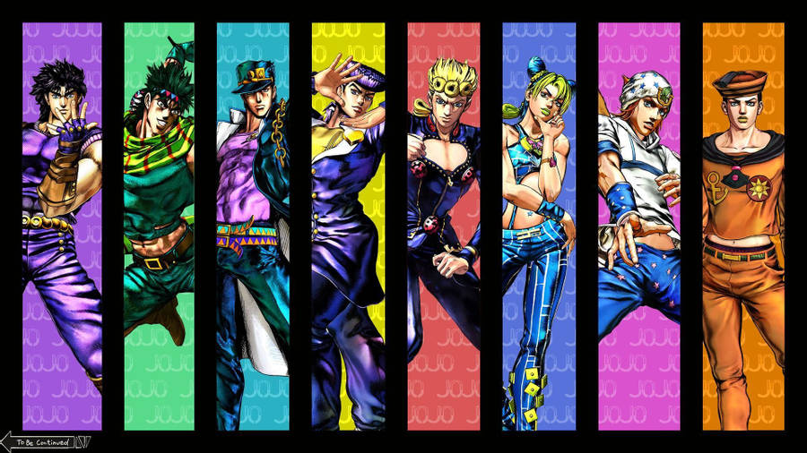
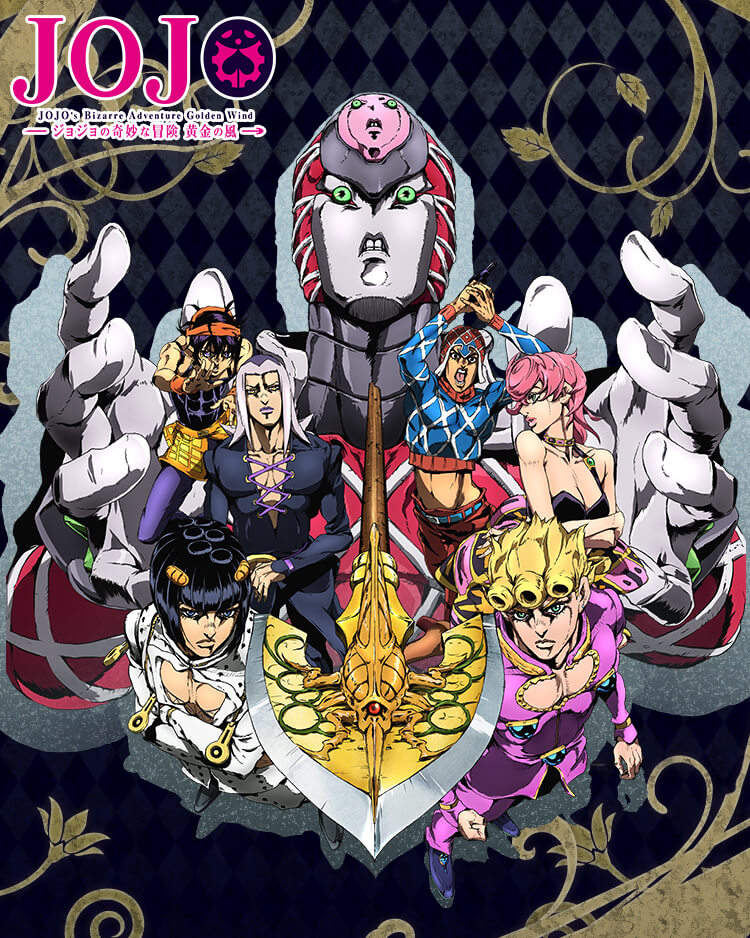
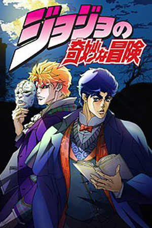
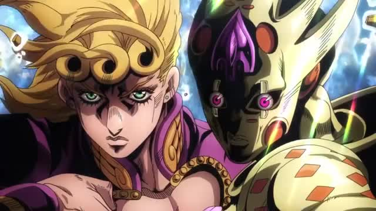
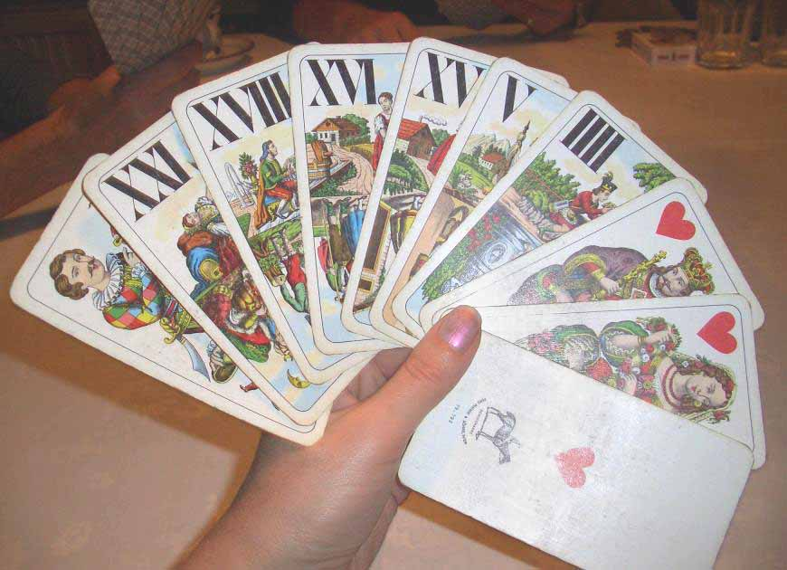

Как называют главного злодея 3 части ДжоДжо?
Дио Брандо
Кира Йошикаге
Джосефф Джостар

Какое название у 4 части ДжоДжо?
Кристальный Изумруд
Бриллиантовая Стена
Несокрушимый Алмаз

Какая главная способность у главного злодея 5 части ДжоДжо?
Останавливать Время
Стирать Время
Ускорять Время

Какой была самая первая способность появившаяся в ДжоДжо? (не являющаяся стендом)
Вампиризм
Хамон
Пистолет

Какое название у 5 части ДжоДжо?
Золотой Ветер
Желтая Сила
Серебрянный Дракон

Названия стендов в 3 части ДжоДжо были основаны на картах Таро. На какой карте основано название стенда главного злодея Дио Брандо?
17. "Звезда""
19. "Солнце"
21. "Мир"
Ты ультромегакомбосупербомбаволшебнофантастическисногшибательнохорош